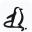

YOUR CHROME TRAVEL COMPANION
Connect Chrome.
Travel with an agent.
Bring the travel websites and accounts you already use into your conversations with Travel Agent.
Set up in three stepsKeep Travel Agent Desktop open while you use the extension.
A quick setup. Then you're off.
Three steps to your first conversation-
01
Pin Travel Browser
Open the puzzle menu in Chrome's toolbar, find Travel Browser, and click the pin.

Travel Browser -
02
Choose Chrome in the app
Open New trip in Travel Agent. After Budget, choose Chrome extension before sending your first message.
BudgetChrome extension -
03
Start with a travel question
Send your request in Travel Agent. The agent can open task tabs in your connected Chrome profile.
“Help me compare hotels near the Bund.”
Already have a webpage open?
Click Travel Browser on that tab to let the agent use it. It joins the cyan Travel Browser group. Click the extension again to disconnect that tab.
GOOD TO KNOW
A little help
along the way.
You choose the browser and the pages the agent can use.
What do the extension icons mean?
ConnectedA colored penguin marks a connected tab. Connected tabs appear in the cyan Travel Browser group.
Not connectedA black penguin means this tab is not connected. Click it to authorize the tab.
ConnectingA gray icon with a dots badge is waiting to connect. Check that Travel Agent Desktop is running.
Needs attentionA red exclamation mark signals a connection error. Hover over the icon for details. Gray without a badge can mean Chrome does not allow access to that page.
Can I use Chrome in an existing chat?
Yes. When no task is running, open the Browser panel's menu in Travel Agent and choose My own Chrome (extension). Each new chat starts with the in-app browser, so choose Chrome for the chats where you want it.
What happens to my browser data?
Your Chrome profile stays on your device. The extension connects to Travel Agent locally. To carry out your request, page content may be sent to the model provider you configured, and websites receive normal browsing traffic.
Chrome isn't connecting. What can I check?
Keep Travel Agent Desktop running and Travel Browser enabled in Chrome. Select Chrome extension in your chat. If you updated the extension files, reload Travel Browser in chrome://extensions. For a tab you already opened, click the extension on that tab to reconnect it.
Developer tools: CLI & MCP
Optional for developers. No terminal commands are needed to use the extension with Travel Agent Desktop.
From a built travel-agent checkout, create a standalone CLI session:
penguin-browser session new
penguin-browser -s 1 -e "await page.goto('https://example.com')"To start the local stdio MCP server, run penguin-browser. Editor setup is documented in MCP.md in the checkout.